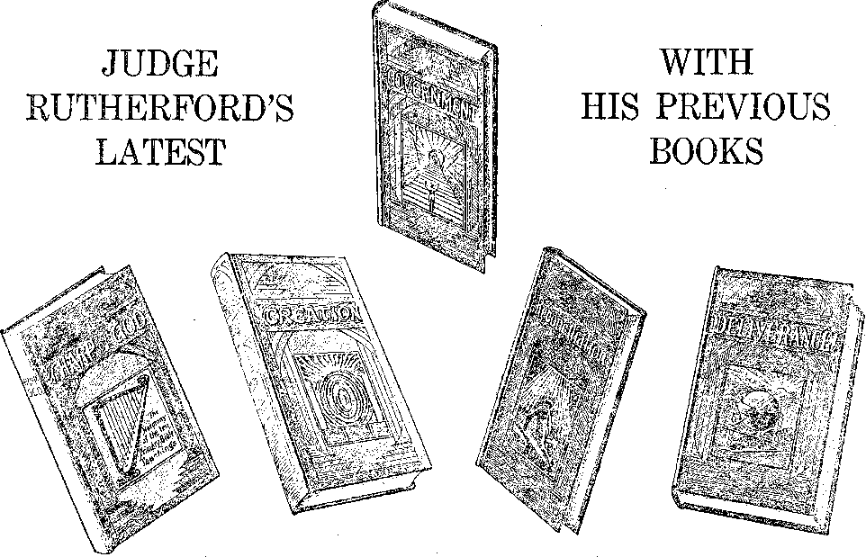

A JOURNAL OF FACT HOPE ANDJ COURAGE
m this issue
DIVING
AS TO REMOVING TONSILS
IN DARKEST QUEBEC
WHY KILL WOOD FOLKS?
IS DICTATORSHIP HARMFUL?
PREPARING GOVERNMENT
fourth of a series of radio lectures on good government, by Judge Rutherford
EVERY OTHER WEDNESDAY
5c a copy - $1.00 a year - Canada & Foreign $ 1.50
Volume X - No. 254 June 12, 19 2 9
Contents
v*-..........--r----------- -■■"■■■' ....... l^OC- — ...... —tt KM
Labor and Economics
Value of Rest Intervals .........
Is World Financial Collapse Impending?
Schwab’s Rules fob Prosperity ....... .....591
Social and Educational
Fifteen the Critical Age ...............................................................—-------
Eskimos Harmed by Civilization ...
400,000 Future Martyrs ........................ 587
Finance—Commerce—Transportation
Political—Domestic and Foreign
Pittsburgh Coal Company Police
The K. oi’ C. as a Patriotic Organization ...... ..591.
Dictatorship Is Greatest IIabm to People
Agriculture and Husbandky . ! . I
Why Kill the Woon Folks? ........... .594
Home and Health
A Glimpse at the Unknown ..................................................................-.
The Difficult and Dangerous Work of Diving ______________________________________...579
Religion and Philosophy
Another Hold-up .................................... .580 ■
After the Wool .................................... .590
In Darkest Quebec .............
An Extract from “The Martyrdom of Man’’
Bible Questions and Answers —......................................................—-------
Preparation fob the Government .....
What the Congregationalists Stand For
The Children’s Own Radio Story ............ —----------------
Published every other Wednesday at 117 Adams Street, Brooklyn, N. Y., U. S. A., by
WOODWORTH, KNORR & MARTIN
Copartners and Proprietors Address: lit Adams Street, Brooklyn, N. Y., U. S. A.
CLAYTON J. WOODWORTH . . Kditor ROBERT J. MARTIN . . Business Manager
NATHAN H. KNORR . . Secretary and Treasurer
Five Gents a Copy—$1.00 a Year Make Remittances to THE GOLDEN AGE
Notice to Subscribers: We do not, as a rule, send an acknowledgment of a renewal or .
a new subscription. A renewal blank (carrying notice of expiration) is sent with the journal one month before the subscription expires. Change of address, when requested, may be expected to appear on address label within one mouth.
■ Foreign Offices
British .............34 Craven Terrace, London, W. 2, Kngland
Canadian...........40 Irwin Avenue, Toronto 5, Ontario, Canada
Australasian . . 7 Beresford Rd., Strathfield, Sydney, N. S. W., Australia.
South Africa............6 Lelie Street. Cape Town, South Africa
Entered as second-class matter at Brooklyn, N. Y., under the Act of March 3, 1879.
Volume X Brooklyn, N. Y., Wednesday, June 12, 1929 Number 254
WITHOUT the use of some special form of diving apparatus, sixty feet is about the limit of the depth to which one may force his way toward the bottom of the sea. The best divers can remain under water only about one and one-third minutes. Rarely can this be extended to two minutes; yet there are a few not well authenticated instances where divers are alleged to have remained four, five and even six minutes under water.
The work of the native pearl divers of India and Ceylon is so difficult that the workers allow themselves but one meal a day, and it is eaten after sundown. These divers are short-lived. All branches of diving work are exceedingly difficult and dangerous.
Every diving job is different. Raising sunken ships is one of the specialties. The divers go down, carefully patch the ship, close it up so as to make it as nearly air-tight as possible, and then the ship is pumped out, its water content being replaced with air. If the patching job has been well done the ship rises to the surface.
It used to be thought that the hull ofr a sunken ship might never rest fully on the bottom, the theory being that at a certain depth the pressure would become great enough to sustain the heaviest object; but the argument is fallacious, because water presses equally in all directions.
When a ship goes down, the part which first fills with water disappears before the rest of the vessel. If the waters are shallow the ship may break in two, doubling up like a jackknife, as it strikes bottom. This happened to the steamer “Republic”, which went down off Nantucket twenty years ago.
The buoyancy of liquids is remarkable. The displacement with air of a cubic foot of water results in a lift of 62} pounds. Hence air is the all-important factor in diving operations. Air to the diver and to his work constitute the key to modern diving.
A diver with a modern equipment can descend to a depth of three hundred feet in about two minutes, feeling no discomfort except in the ear drums. This is caused by the air pressure bending the drums inward. It can be overcome by pushing the nose hard against the face-plate of the helmet and blowing so as to open the Eustachian tube, thus equalizing the pressure. The same results are accomplished by chewing gum and swallowing the saliva.
Italians seem to have been the first t® use diving apparatus. Vegetius made a suit in 1511, consisting principally of a buckskin helmet with window-lights in the face. To the helmet was attached an air hose connected at the water’s surface with a bladder filled with air. When the air in the bladder was exhausted the diver had to come to the surface.
Lorini, years later, built a platform attached to a vertical shaft, by means of which he was able to work at a depth of thirty feet. Borelli, another Italian, first used compressed air in 1682. Diving without compressed air is now unthought of.
Modern diving apparatus contain electric lamps and telephones and an air supply so arranged that the diver may remain at his work under water five or six hours without coming to the surface. A recent invention makes the diver independent of any connection with persons above. A strong metallic air reservoir is carried on the diver’s back. When he wishes to leave the water he inflates his dress with air from the reservoir and immediately rises to the surface. However, divers always work in pairs, for the sake of safety. The working-depth of diving operations has been extended to 306 feet.
Needless to say, diving is one of the most dangerous occupations of men. Divers are always in danger. If the air line gets tangled, or if the diving suit becomes broken, it is all up with the
S7»
’diver. Groping in the 'darkness between the decks of a vessel, he must contend with the force of the tides, and with the possibility of falling or of having something fall on him or on his life-line. All that is necessary to finish him is that a door should swing shut and pinch off his air supply at just the wrong time.
Divers dread the denizens of the deep. It is not nice to be bitten in half by a shark; nor is it nice to have a barracuda saw a hole through you. By the way, it is claimed that in a space of seven feet a barracuda can attain a speed of sixty miles an hour; and it is not pleasant to have anybody come at you with a speed like that, especially if he is equipped with teeth like a barracuda.
Then there is another dweller of the seas that enjoys coming up and wrapping his powerful tail around you and socking a horny fin into your interior with such force that you are short-circuited for life, the length of your life in that case being about two minutes.
But the pet aversion of divers is the friendly octopus. Like the Power Trust it feels for you with first one slimy tentacle and then another, intent on sucking your blood; and the worst of it is that when one arm is cut off the others are just as affectionate as ever. Instances are on record where diver and octopus have been hauled together to the surface, and even on the deck of the attendant vessel the octopus has continued to fight furiously.
Naturally, with billions of gold coins and bullion lying beneath the sea, the wrecks that strew the seven seas are of interest to divers. One of the follies of mankind is the ease with which persons will part with real money to take a doubtful chance of recovering great sums left cached by pirates or sunk beneath the waves of the sea.
Since the World War many millions of dollars have been recovered from ships sunk in the
A DISPATCH from Ottawa to the Fort William Daily Times Journal says:
Archbishop Forbes, in a pastoral letter read in all Roman Catholic churches of the Ottawa diocese yesterday, announced the refusal of the sacraments to all Roman Catholics who continue in future to pay school taxes in favor of public schools. The announce-shallow waters adjacent to British shores. Electrical devices were used successfully to locate bullion in some of these operations, but it was all slow, difficult and tedious work.
To recover the bullion sent to the bottom with the Laurentic took five years. In 1920 only eight bars of the bullion were recovered, in 1921 there was a recovery of 100 bars, in 1922 this was raised to 900, in 1923 the total recovered was 11,050 bars and finally, iml924, the last of the $1,250,000 which went down was brought to the surface.
Whenever* an expedition is fitted out to try to recover lost treasure there is always a great hullabaloo as to who shall have the proceeds, if there are any. Shippers of the gold, underwriters, the government, all take a hand; so it is not all roses being a diver, or even employing a diver. What you recover may be taken from you.
English laws require the delivery of treasure trove for the use of the crown, but in actual practice the finder is paid a sum nearly equal to the value of his find. American laws require the delivery of treasure to the person on whose land it is found.
Scores of expeditions have been fitted out to try to locate the riches supposed to have been buried by Captain Kidd, yet only one find of such treasure was ever made. That was made on his own place by a man named John Wilson, living on one of the islands in Casco Bay, off Portland, Me. The extent of his find was $12,000, in Spanish gold.
Many of the tales of hidden treasure are merely yarns which have no foundation in fact. Off the coast of the Gaspe peninsula, Quebec, is a rock 500 feet high, with a flat top and unscalable sides, called Duval's Hoard. The tradition that riches are buried on the top of the rock has led to so many deaths of climbers seeking for the imaginary treasure that the legislature of the province has passed an act forbidding any one to attempt to scale the rock without permission. ■
By R. D. Morin
ment affects 1346 Roman Catholies assessed as public school supporters.
Please notice that in effect this says that Archbishop Forbes will send 1,346 souls of his flock to hell-fire (according to his own belief) if they continue to pay the school taxes which by law they are obligated to pay.
Fewer Alcoholic Deaths in Prussia
THE Prussian death-rate from chronic alcoholism has dropped until now it is only fifty-seven percent of what it was prior to the .World War. . ■
Astonishing Motor-Bus Travel
TODAY in the United States there are 6,700 motor carrier companies, operating 35,000 buses over 234,000 miles of highway and carrying one billion passengers a year. The railroads have lost one-third of their passenger business
The Largest Nine Cities
npHE largest nine cities of the world are, in -L their order, London, New York, Berlin, Paris, Chicago, Buenos Ayres, Philadelphia, Moscow and Osaka. Osaka, Japan, is by far the largest oriental city in the world. .
Strath Mackay’s Three Voices
A LONDON tenor, Strath Mackay, a former window-cleaner, has the curious ability to sing either bass or tenor or both at once. He is now studying music and is believed to be on his way to a fortune. . '
Ear Phones at Every Seat
AN AUSTRIAN train has ear phones at every seat, enabling passengers to listen to radio concerts during their journeys. The apparatus is also used to announce the approach to important stations. '
Twelve-Hour Day in Nova Scotia
rpiIE twelve-hour day still prevails among the ■T steel-workers of Nova Scotia, and an effort is heing made to secure more humane hours. It is only a very few years since the twelve-hour day was in common usage among the steel industries of the United States.
Fifteen the Critical Age
NEW YORK police records indicate that fifteen is the critical age for both boys and girls. More children run away from home at that age than at any other. Usually the reason is unsatisfactory home conditions. Twice .as many boys run away as girls. Most of the runaways are found by the police, living lives of independence and not wishing to return home.
Sixty-eight Thousand Civil War Veterans
THERE are but sixty-eight thousand veterans of the Civil War remaining on the pension rolls and these are now passing away at the rate of about a thousand a month. Thirteen widows of soldiers of the War of 1812 are still on the pension rolls.
Traffic Jams in Poland
POLAND is now wrestling with the problem of how to move traffic in streets that are already loaded with more automobiles than they can handle. There are still a great many horses on Polish streets, and this, as all automobilists are aware, complicates the situation.
Getting Rid of Rats in Russia .
SOVIET officials have discovered that a hundred rats, starved until ravenous, can then be taught to eat smaller rats and finally to become rat cannibals. They are then turned loose in a city and clean it up in no time, after which they are themselves finished off with poison.
Improvements in Seismographs
SEISMOGRAPHS are now but half the size formerly necessary but are much more accurate. The recording pencil is now a point of light instead of a stylus, and the result is an accurate photograph of the earth movement noticed.
Never Out of Vegetables
FLORIDA and Carolina cabbages are in the market from January to June, and New England cabbage the rest of the year. Florida and California supply celery and tomatoes all winter. The United States is never out of fresh vegetables.
Slave Traffic Across Red Sea
IT IS claimed that Abyssinian slave traders still do a large business selling Sudanese slaves for work in Arabia. The prices paid by ... the Arabs range from $400 for a grown male to $200 for working women and $100 apiece for children. The slaves are carried across the Red Sea at night, and in shallow7 waters can not be followed by the boats of the British navy that are supposed to patrol this artery of commerce.
Likes to Travel
John T. Sullivan, retired business man of Waterbury, Conn., together with his wife, has made a trip around the world every year for the past four years. Four steamship lines are now running round-the-world cruises. Prices range from $1,750 for a single passenger up to as high as you wish to go.
Whirling Dervishes in Bulgaria
THE whirling dervishes expelled from Turkey by Kemal Pasha have found a home in
Bulgaria. It is claimed that these dervishes, after a certain amount of whirling and incantations to the demons, perforate their bodies with red-hot skewers and prongs without harmful results.
Java Cane Rescues Louisiana Sugar Business
DUE to mosaic disease in its sugar-cane, Louisiana was in a fair way to lose its sugar business entirely; but cane imported from Java has saved the day, and now more sugar is being grown than ever before. The new cane is a hybrid developed by the Netherlands government from Himalayan stock.
The Terrors of the Radio
THE message of God's kingdom going out over the radio is making it hot for the hellfire theologians everywhere. Thus the Reverend Doctor Collins, in the Ecclesiastical Review, gives four rules for faithful Catholics as to what is sinful and forbidden in the matter of listening in over the radio. How ridiculous!
Speculation in Wall Street
THE rise and fall of the market in the New
York Stock Exchange is regarded as the barometer of American business and of American honesty, yet a Secretary of the United States Treasury once said of its operations that they are just as much gambling as running a roulette wheel, that there is not a thing constructive about it, that it does not produce a thing that contributes to either the happiness or the prosperity of legitimate business, that the business consist's of selling things not possessed and buying things never expected to be received, and that it ought to be stopped. Maybe Armageddon will stop it.
Portugal Goes In for Protection
TPOLLOWING the example of some of the oth-■L er prosperous nations of the world, Portugal has gone in for protective tariffs to encourage home industries. The result is that since the war Portugal is rapidly becoming a manufacturing nation, producing many of the articles heretofore purchased abroad. •
Flocking Away from the Church
T N THE last eight years 140,043 persons have -®- abandoned their churches in Austria, 119,870 of them being Catholics. The statement is frankly made by the National Catholic Welfare Council that never since the Reformation has there been “& religious movement in Vienna embracing such large sections of the population as the ■ separation movement of the past few years”.
Air Mail Pilots Give Fire Alarms . '
rpWICE recently air mail pilots have given alarms of fires which they discerned, and in one instance, by flying around and around, jazzing his motor, the pilot was instrumental in saving the lives of two children caught in a burning building. As soon as he saw the people running to the burning house he went on his way rejoicing,
Air Mail Receipts Growing Rapidly ■ . '
AIR MAIL receipts more than doubled during the second half of 1928. They are now in excess of a million dollars a month and the air mail contractors are making money. During 1928 the United States air mails flew the equivalent of 330 times around the earth. Passengers to the number of 52,934 were carried last year. .
Changes in American Diet ■
A GENERATION ago Americans lived on meat, white bread and white potatoes.
Then they found that they were being killed by their diet,, and they changed to fruits and vegetables ; and that has made it all very hard for the raisers of livestock, and for the packers, and for the millers and the potato growers. Moreover, the American woman of today wants to keep thin, and that has a bearing too. Lettuce and fruit will keep her so, but not meat, bread and pota+oes; and the food statistics show she is going the way she wishes to go.
THROUGHOUT large areas in the famine-stricken portion of China it has been impossible to bury the dead, and dogs and wolves are devouring the corpses. Roving bands kill and quickly pick the bones of any living animal encountered, and cannibalism has broken out. The famine involves twelve million people in nine provinces.
T N THE year 1928 the bankers of the United J- States loaned $6,448,000,000 of the savings of the American people to borrowers in thirtyeight countries. Meantime the people of Florida complain that they can not get funds to properly develop their state. Florida banks send all their money to New York to get the larger earnings of foreign loans and speculation.
UGOSLAVIA has taken a step forward by adopting the Latin alphabet, in place of the
ancient characters hitherto used. It is calculated that the change will cost several million dollars but will be in every way advantageous. Nobody can live in the past. A defunct alphabet is no asset to any country. The Latin alphabet bids fair to become universal.
HE Canadian mounted police report that education and civilization are having their usual unfavorable effect upon dwellers in the
Arctic regions. Eskimo children are found to be less frank and honorable than their uneducated and uncivilized parents, and half-breed children lack the resow^fulness of the full-blooded Eskimos.
T N TEN years after the World War the net registered tonnage of incoming foreign traffic has so increased in Hamburg as to raise it to the position of the world’s most important port, next to New York. In the past year it has shot ahead of Antwerp, Rotterdam and London, all of about equal importance. The population of the city is increasing rapidly, many new piers . are being built and further prodigious growth is anticipated, to take place shortly.
A S THE years pass the Russian people are ■U*- finding more and more of the treasures of the old regime. Recently, in an abandoned monastery in the Volga region, a group of children playing in a cellar found a secret passage leading them to a treasure chamber in which were found gold coins, ingots and jewels of the value of several million rubles.
THE Longacre Engineering and Construction Company of New York will build $25,000,000 worth of modern apartments in Moscow in the next five years. The city of Moscow will supply the labor and materials, and the construction company will be paid for their work of supervision.
IN England and Wales in the past twenty-one years there have been 202 deaths from vaccination of children under five years of age. In the same time, in the same countries, the deaths from smallpox of children of the same ages have been but sixty, less than one-third the number. Vaccination has been temporarily suspended in the Netherlands. .
HE British government has taken steps to preserve for posterity those portions of Hadrian’s wall which still remain standing, by forbidding four hundred landowners to make any further demolitions of it. The wall stretches 100 miles across Britain, from Carlisle to New-castle-on-Tyne, and was built to keep the wild Scots of the North out of Romanized England.
ONE would imagine that it would be extremely difficult to entrap diamond smugglers, especially when those smugglers are stewards on the ships running regularly into these ports. Nevertheless, Uncle Sam’s revenue officers have now detected ten of the members of a gemsmuggling ring, with more arrests in prospect. Several of these men were stewards on the great liners and received but meager compensation for the great risks which they ran.
CAREFUL measurements through gold and silver screens, taken at Mount Wilson observatory, disclose that in the last four years the power of the sun's ultra-violet rays has gradually increased until, in some months, they
are now twice as powerful as when first sured four years ago. These ultra-violet are the ones so helpful to mankind.
mea-rays
over
. npivo army fliers, at a record height of seven miles above Dayton, Ohio, encoun-
tered and flew through clouds of ice crystals, the existence of which has been long suspected. It was evidently these clouds of ice crystals . that were witnessed by a subscriber for The
Golden Age, C. Elmont Bell, Oregon, and reported recently in its columns.
IX A cellar in France two scientists have grown and ripened strawberries by electricity. The berries were said to be of exceptional flavor and aroma. It took forty days to bring them to maturity, and they cost $5 apiece to produce. Two-1200-watt lamps were used, continuously revolved about the plants at a height oi' feet above them.
HDHE same De Haan who wanted his radio
audiences to try to break the legs of Bible Students if they tried to place Christian literature in their hands has been charged by his denomination with conduct unbecoming a minister of the gospel, also with libel, deceit, malice and fraud. De Haan refused to answer the charges and has flown the coop.
Kish Expedition Confirms Flood Story mHE archeological expedition which is work uncovering Kish, and which is
at fi-
nanced and operated by the Field Museum, Chicago, and Oxford University, England, cables that it has found convincing evidence that the Bible story of the flood is correct. Our Lord and Savior confirmed that long ago, but it is nevertheless interesting to find that some of the scientists are coming around now and admitting that the Bible is true after all.
FOUR of the principal cities of the East,
Washington, Baltimore, Philadelphia, and New York may be traversed by automobile in a single day, with the surprising result that the motorist will find a different set of traffic laws in each of the four cities, with four separate kinds of regulations as to how a left-hand turn may be made. '
NOW that many sizable cities are only a short distance from one another by automobile, the discovery has been made that in case of a large fire the fire companies from out of town can seldom render much service because of the great variety of threads and sizes of hose couplings and connections. Steps are being taken to standardize fire-fighting apparatus.
LONDON is putting up a game fight to get
the best of her fog and smoke evils. A new fog-penetrating light has been invented which will provide clear visibility for any object three hundred feet away which is directly in the path of the rays, and a smokeless fuel is now offered for sale at about $12 a ton, approximately the price charged for good coal.
THE manager of a Sayville (Long Island) chain store conceived the brilliant idea of giving fifteen ounces to each pound of sugar. It worked very well for a time, until the county sealer of weights and measures came along, haled him into court and produced a five-pound package of sugar that was five ounces short. Thereupon the judge fined the man $25, $5 an ounce.
THE year 1928 was the greatest year for suicides in the history of New York. In that ■ year 1,193 persons ended their lives. Suicide and unemployment follow the same curve, showing that there is a direct relation between the two. Every piece of labor-saving machinery put in operation is liable to cause a death by suicide. Human beings are slow to adapt themselves to changed conditions of employment.
IN THE year 1927 the transits through the
Suez Canal were 5,544, while the transits through the Panama Canal were 6,085. Both canals are money-makers, Suez much more so than Panama because it has no locks and because the rates charged are much higher. The charge is about $7,500 to pass a ship through Suez, and about $4,300 for passage through Panama, both on a tonnage basis.
Shipment of Rats to Paris
OME enemy of tilings French, from some point east of Suez, recently shipped a cargo of rats to Paris. Shortly before reaching their destination the rads gnawed their way out of the boxes in which they were shipped and it was necessary to shunt the ear to a siding and let them fight one another to death. Efforts are being made to find the miscreant who is responsible.
A MAN in Rochester had some coal put into his cellar and the coal heaver left the window open when he got done putting in the coal. The day was cold. A friendly dog thought it might be warmer inside than outside. His friends thought the same, and when the man came home at night he found thirteen happy canines enjoying the blessings of his hospitabb home. He claims that the whole thirteen rose and wagged their tails when he came home.
THE Children’s Bureau of the Department of
Labor thus describes the shanties for migratory Avorkers in the fruit and vegetable districts around Baltimore: “As a rule there is but one room on each floor, with stairs on the outside, leading to the upper room. On each side of a narrow aisle down the center the floor is divided into sections or pens by boards ten or twelve inches high, each section being about six feet long, and from four to six feet wide, and covered with straw for a mattress. Each family is allotted one of these pens. At night, men, women and children, partly clad, one family separated from the next by the plank, sleep side by side.” It may he added that this is in the wealthiest country in the world!
PANISH students are tired of the De Rivera dictatorship and in Madrid have gone on strike. Madrid University will be closed for a year and a half. Several students have been killed; more than a thousand have been arrested. Police in search of them rode among the chairs and benches of cafes, causing the people to rush screaming in every direction. A girl student received a. severe sword cut on her head.
Steeple Business Tottering .
HPHE steeple business is on its last legs. The J- secretary of the Philadelphia Federation of Churches reports that the Protestant churches of his city are pretty nearly licked. A drive is now on,, the country over, to persuade incompe-.tents in the pulpit to stop preaching their own sermons and to merely read canned sermons sent to them by those engaged in the sermoncanning business.
THE Liberal party of England is out with a definite plan to end unemployment by the construction of a trunk-line system of modern highways, embracing all the principal centers of population on the island. If the program is carried through, it will embrace ring roads around the larger cities, and loops past the smaller cities and towns, with no crossings at grade, and will thus be the most nearly perfect highway system in the world. Its estimated cost is only $725,000,000.
THE governor of South Carolina recently made the unfortunate boast that his state has the largest proportion of professing Christians of any state in the Union. Thereupon, Robert Quillen, an investigator and writer, brought forward the additional information that it also has in proportion to its population more cold-blooded murders, more casual killings, more corn-liquor stills and consumers, more venereal disease and more bogus-check flashers. Also, that the numerically inferior white men are charged with more felonies than the blacks. The natural result of any hell-fire religion is to manufacture hypocrites, and South Carolina is strong for hell-fire.
LIKE many other states Florida still has the old system of fees for pay of government officials. It is claimed that under this system the sheriff of the county in which Tampa is located collects and keeps for his own use $97,000 a year, and this at a time when the city government is desperately and ineffectively trying to find some way to collect the back taxes owed by its citizens.
Doctor Wm. McKenzie, Leesburg, Fla., retired physician, announced astonishing results in the cure of the flu through the use of grapefruit and an abundance of water and soda, and has brought the wrath of the Medical Trust down upon him for having widely circulated such a sensible, inexpensive, home -remedy without going through the usual red tape of submitting it to his state health board, etc., etc.
THE Jew-baiters in Germany were forced out into the open when one of their members nearly killed the Brazilian consul at Bremen, only to admit, when questioned, that he had nothing against the man but was under the mistaken apprehension that he is a Jew. It now transpires that Jews have been attacked savagely in various parts of Germany, and for no reason whatever. The Reichstag has taken the matter in hand and will see that some of its members responsible for these outrages are punished.
THROUGH the efforts of an 'American newspaper man Berlin police have at last located the libel plant at which were prepared the Borah and Norris libels and also the famous Zinovieff letter, which caused the downfall of the Labor government in England. The miscreant turned out to be a Russian exile named Orloff, an exceptionally able man, who has made a fortune out of his hatred of the Soviet government and his willingness to use any means whatever to bring about the downfall of governments or individuals that he suspected of having any sympathies or friendliness toward the present mode of Russian government.
"ILf arcel Labbe, M.D., of Paris, in an article in the Medical Journal and Record declares that not a single cure for diabetes, through the use of insulin, has been found. The doctor, who has made a specialty of diabetes cases, goes on to say that of his first twenty-four cases thus treated twelve died within three years and not a single authentic cure has been recorded. This is the end of insulin.
TTHE best that can be said of New York City’s methods of disposing of sewage and garbage are that they are primitive; yet New York is the world’s richest city. An oil painting decorates the entrance to the principal garbage destructor plant at Frankfort-on-Main; at Fuerth it is surrounded by a beautiful garden; at Rotterdam the excess power is used to run the entire trolley system of the city.
THE new Einstein theory, showing a relation between magnetism and gravitation, looks forward to a time when man may be able to insulate himself against gravitation, when airplanes may float without engines and men may step out of a window into the air without fear of falling. The new theory conceives of gravity as manifesting itself only in the immediate surroundings of the object, and acting upon space in such a manner as to shape or reshape it. The new theory is believed to teach that matter is of electro-magnetic origin. Interplanetary journeys are now conceived of as possible.
A Roman Catholic writer in the Boston •Ax. Transcript, after glorifying the vestments of the priesthood, stated that he visited a meeting of the Bible Students and that “the prevailing color was black. All the men had black ties and most had black suits”. We should think that of all the people above ground the last people to say anything against the use of black would be those people who admire priests and nuns. To the full extent of their ability they have made the whole world look like a morgue, and all its activities like a funeral procession. Their garbs of black are everywhere.
IN Germany 220,000 people have pledged themselves never to participate in another war. In England 131,000 have signed the Ponsonby Peace Letter refusing to support any government that resorts to the law of the jungle, and there are about 50,000 more candidates for martyrdom in the United States, France, Holland and Belgium. Peace that costs anything is unpopular.
WIGAN, England, seeking to promote peace
. throughout the world, has forbidden the teaching of school children anything in the nature of glorification of army, navy or air force. In the past, millions of dollars have been expended in all countries in persuading school children that the art of killing your fellow men is the surest path to earthly glory, and the adults have been taught the same thing by the erection of statues in honor of the great butchers of the world rather than of its great heroes of peace times. .
BOSTON has a Hebrew Free Loan Society which in the past sixteen years has loaned over $2,500,000 to 19,062 persons, without interest, and with a loss of less than one-half of one percent. The money is loaned to persons of any faith, on the indorsement of notes by responsible persons. All students of the Bible know that the Jewish people were forbidden to charge interest on loans to their needy brethren.
BRITAIN could tunnel under the English
Channel for $150,000,000. The bore would be through an easily worked chalk. It would put London on the continent of Europe and make it still more a center of trade and travel than it now is, but Britain fears invasion and will not allow the tunnel to be built—a foolish fear in these days of airplanes. Now a French engineer wishes to construct two islands on sand bars in the channel and connect them by bridges. He claims the whole scheme can be completed for only three times the estimated cost of the tunnel.
CAREFUL experiments with men and women employed in various lines of work, from the simplest and easiest up to the most difficult and strenuous, show that the best results are accomplished when about one-fifth or one-sixth of the total time is spent in rest,, i. e., one-fifth or one-sixth of the eight hours of labor. Brief intervals of rest are said to increase, output. .
JN THE highlands of Abyssinia, dwell the
Falashas, or Black Jews, the only race of Jewish mountain-dwellers in the world. The features and traditions are Jewish, but the color is black. In a mahogany casket the. Falashas guard what they claim is a copy of the Pentateuch presented to the Queen of Sheba by King Solomon. There are a few of these Black Jews in the greatest Negro city in the world, the Harlem district of upper New York City.
A LITTLE while ago we were told that suspected criminals might be inoculated with a certain serum and that while under the influence of the narcotic they would automatically tell the truth. Recently a banker’s son in Honolulu was kidnapped and murdered. Suspicion indicated a former Japanese servant. He was arrested, serumed, and confessed. When he regained consciousness he stoutly denied his guilt. In a few days the actual murderer was found and the Japanese servant was given his liberty. This is the end of the truth serum.
HHHE National Association of Manufacturers finds that seventy percent of concerns make no discriminations of age in the hiring of men. Of those that do make discriminations, 40 percent feel that men over 45 or 50 can not keep the pace required of the younger men; other arguments advanced are that older men are more liable to get injured or to injure others. None openly advised the hangman’s noose for such as are beginning to feel the weight of the burdens of life, but there are birds that do hang those that are unable to keep up with the flight of the younger ones.
IN THAT worst place on all the earth, the French penal colony of Devil’s Island, only six degrees from the equator, the convicts are allowed neither hats nor shoes and frequently drop from the effects of the sun; but should any attempt to help the prostrate ones they are immediately belabored with whips. The keepers do not dare let the men swim in shark-infested waters, for the reason that so many deliberately sought suicide, preferring the man-killers in the water to the man-killers on shore.
THE negroes of Central Africa have found the French such hard masters that there has been an exodus of something like two million blacks from French territory into Nigeria and the British Gold Coast colonies. In vast regions the French authorities and concessionaires have literally worked the natives to death. In one place the blacks have captured a number of white men and notified the French that if they advance further into their territory they will put them all to death.
IRST, the economist J. Maynard Keynes shows that France controls the world’s gold supply, which is admittedly insufficient for its needs. Next, Sir George Paish, another great economist, tells us that a world financial collapse is only around the corner; and then we hear that all the greatest financiers in the world are getting together to see what can be done about it. Maybe Armageddon, when it comes, will be accompanied by a first-class financial panic.
OW that it has been proven that paper, cellulose, viscose, furfurol, guncotton, papier-mache, pulp-board, pyroxalin, diabetic food and oxalic acid can be made from corn-stalks, they are being studied by men who have millions of dollars at their command to see whether these things can be produced from corn-stalks more cheaply than from other sources of supply and whether a supply of the corn-stalks can always be had. The day of the corn-stalk seems to have come.
TN FEBRUARY, in the district of Patricia, in the northern part of Manitoba, two airmen found fifteen Indians, men, women, and children, three of them dead, packed together in a shack eight by ten feet in size- There was no door to the shack. None of the Indians had attempted to move those who died, because none had sufficient strength to get up off the floor. It would be hard to find anything, even in the history of the Indian Bureau of the United States, that would be worse than this.
REAT corporations are making increased uses of mechanical men, or robots, to do
things that men can not do as well or can not do at all. The Northern Pacific Railway has a robot costing $105,000 which, riding in a train, automatically detects defects in locomotive operation. The Westinghouse Company has a robot which counts the guests as they pass a door, or sorts materials according to color or imperfections. It also matches fabrics, paints and tiles with great accuracy.
A TWELVE-ACRE fish pond at Concordia, Louisiana, raises food for the inhabitants of the pond along the shore line and in the shallow water, and obtained a yield of 10,000 pounds in nine months. Besides growing food on the shore, they have erected electric lights over the pond to attract insects. The results are so gratifying that it is believed a ton of fish to the acre may be raised in many of the large Louisiana ponds. The kind of food grown on the shore was not stated in the dispatches.
IVE us back our hell,” so preaches Reverend D. E. Perry, pastor of Providence Congregational Church, at Georgetown, British
Guiana. Page some kind-hearted man who will give this man back his hell. It is not the Bible hell, the grave, that this man wants given back to him. It is his own hell, the theological hell, the money-raising hell and the hair-raising hell that he wants returned, and which the Bible Students have shown never existed except in his imagination and in the collection basket.
JVNE 12’ 1929 The qOLDEN AGE
IF YOU start in the grocery business, according to a calculation recently made, the chances are, under present conditions of chainstore growth, that your business life will be seven short and troubled years. That is not very long in which to make a fortune, is it? And if you want to make the fortune you had probably better select some business where you will have a few more years in which to show what you can do. .
WHEN the corporations finally take over the last there is of the government we can form a good idea of the results to the common people from what has happened in Pennsylvania in those districts where the state has turned over its police authority to the coal and iron companies. Thus, at the barracks of the coal and iron police at Imperial, Pennsylvania, Lieutenant W. J. Lyster, of the Pittsburgh Coal Company’s private police, said, “I feel like a good workout,” stripped to his waist, picked up a poker, walked over to a prisoner, John Barko-ski, and beat him over the head until the poker was bent almost double: he paused, straightened the poker and went at it again. After beating the man into insensibility he jumped on the man’s body, broke his ribs and punctured his lungs. The man never regained consciousness. At the morgue it was said that his body was in the worst condition of any they had ever seen. His hands were swollen to twice their normal size from trying to deflect the blows. Friends of Lyster fear that,he may be reprimanded for going so far, but it is not at all likely that the Pittsburgh Coal Company’s police will lose any of their powers. When the corporations get it all it will be a fine government, won’t it? The murdered man never drank, had an excellent record for over thirty years in the mines, and is described as “always smiling, never hurting anyone”.
One reason Avhy the company is not likely to do much for the Avidotv of Miner Barkoski is that she made the statement, “The coal cops are always on the watch for a man with a dollar, a pretty wife or young daughter, some as young as 12 or 13 years.” Mellon ought to take a little time off from his duties at Washington until he gets this Pittsburgh Company less odoriferous.
OVER ten years after the world war which was to end all Avar the United States has an army of 137,698; Japan has 210,000; Poland has 242,373 ; Roumania, 266,500; Spain, 272,787; Italy, 380,448; Great Britain, 403,915; Russia, 658,000; China, 715,000; while France, the most warlike and militaristic country in the world, and the world’s greatest menace, has 727,413. Total of the ten countries named, over four million men. Must we have another Avar to end war ?
WE’RE all sunk iioav, for it seems that just before the pope finished his deal Avith Mussolini to take over the temporal power and a good-sized chunk of the money which America recently loaned Italy, in a moment of thoughtlessness he blessed the whole world. And, mind you, this is after all those airplanes blessed by the pope and his bishops have landed at the bottom of the sea. Incidentally, on the day and hour of the blessing, February 10,1929, at 10.30 a.rn., rain fell in torrents from leaden skies. The account says, “The pope, robed in white and wearing a gold tiara, was seated within the gestato-rial chair, borne by eight bearers.” Can somebody tell us wha' the word “gestatorial” means when used in this connection? The next day after his riding around in this palanquin the papers with Mussolini were signed. The Netv Orleans Item-Tribune says that this means “the definite emergence of the Catholic Church from a more or less negative, or passive, condition, which set in after the Reformation, into a world-wide condition of positive action producing important results in all the fields of human affairs”. This may be so, but we are from Missouri and wait to see. The great kingdom over Avhich the pope Avill henceforth rule now' comprises one-sixth of a square mile. Professor Salvemini, former member of the Italian Chamber of Deputies, declares that Mussolini entered into this agreement for the same reason that a droAvning man clutches at a straw. The pope’s subjects in liis newr state are estimated at about 200. The pope himself descrL the treaty as “'one of the most important steps taken by the Holy See, which may prove the turning point in its history”. Mussolini was once ungracious enough to refer to the pope as “'the bloody old Avolf of the Vatican”.
By Mrs. Mary Howitt (England)
I DISCARDED my aluminum stewpans for ordinary culinary purposes, but thought 1 would economize and utilize them by lining them with paper and baking my cakes in them. Well, I put part of the mixture in block tin and part of it in the aluminum pans. Now the cakes baked in the aluminum pans had a distinctly peculiar taste, especially on the outside of the cake, but the ones cooked in block tin were perfectly wholesome. I couldn’t have believed there would be such a difference. Scrap-heap for them, and should be for all aluminum culinary ware. Life is more to us than the most expensive of such.
FROM the Christian Life Missionary, under the title “Who Owns the Wool”, we select a few choice items from the pen of J. B. Campbell, D.D., LL.D.
The mightiest controversy of the age is over “rights in wool”. It is, or ought to be a controversy both in the pulpit and among Christians in the pews of every church in Christendom till God’s right is admitted and acted on. To flinch on this fundamental doctrine is to trifle with the greatest practical question the world confronts. Let God’s right to the wool of His own sheep, to say nothing of the hair of the goats—I say let God’s right be settled, and we are at the opening of a new era in the world’s history.
Shear the sheep? Yes, frequently and close. The pastors are the shepherds; and it is their business to feed the sheep, care for them, and shear them. A shepherd who neglects to shear the sheep, ought to be turned off. He is an unfaithful servant of the Great Owner. Pastors need to face this question.
So important is this matter in the churches and in the lives of the people, that it demands special and extremely earnest treatment. Some of the sheep must be cornered and crowded before they will submit to the process clearly taught in God’s Word; but they must be sheared.
Next to redemption the greatest question in the Christian world today is the question of rights in wool. If God’s sheep were properly sheared, they would abound in health, and countless missionaries could be sent, as torch bearers, to every benighted region of the globe. The tears of widows and orphans could be dried, the sick cared for, pastors supported, homes illuminated by the Word of God, and the world belted with the light of Truth.
By Mrs. M. E. Swenson
T SENT the following communication to the A Minneapolis Star, but for reasons best known to themselves they failed to give it publicity. I feel sure many readers of The Golden 'Age will be interested:
Dr. W. A. Evans writes an article in the Minneapolis Journal about a disease they call “Sprue”. “The definite ear-marked disorder is characterized by sore tongue, anemia and diarrhea. Sometimes the disease may go no further than indulging in a sore tongue, for much of the time. The cause is unknown. ’ ’
After suffering for about four months last year witli just those symptoms, my attention was called to a written article entitled “Is Aluminum Kitchenware Poisonous?” It claims that the aluminum compounds produced by cooking food in aluminum dishes are poisonous to the human system. I immediately discarded all aluminum utensils in my kitchen, and within three weeks my tongue was back to normal and the other symptoms soon disappeared.
[Reprinted from The
0 THIS have the descendants of the frontier ■ fallen; from bear meat to lettuce; from venison dried in the sun to a plant little higher in the scale of eternal values than the grass of the fields. These reflections are caused by the despairing cries from the packers, who claim that salads have nearly driven roast beef off the American dinner table, and who estimate that the annual consumption of meat is 45 per cent less than it was ten years ago, while that of salad has increased 110 per cent. Advices from housewives indicate that the packers are at least partly to blame, for it cannot be denied that the price of beef at present is enough to make any shopper hesitate before she brings home the joint. And the passion of the American woman —in common with the French, English, German, etc., woman—for a slender figure undoubtedly is also a contributing factor. Thus at the same time that the consumption of lettuce has increased, that of pastry, white bread, and potatoes is said to have fallen off 25, 20, and 15 per cent, respectively. Nevertheless, examination of the changes in our national diet sho-ws an advance in the direction of sensible eating. We eat more fruit and fresh vegetables, more wholewheat bread, more cereals, more poultry and eggs, we drink more milk.
Dr. B. IL Jones of Pittsburgh gets out an instructional mailing card regarding the removal of tonsils that is an interesting piece of work from a typographical standpoint. We set up the card just as it appears. The words in large type are to be read three times, once for each of the two lines which they span, and once more in the slogan which reads diagonally down the card. We do not know Dr. Jones, but he seems to write interestingly, courageously and forcefully on subjects of preservation of the health. He is a hard-hitting opponent of the germ theory of disease. We do not guarantee the accuracy of his views, but they interest us,
n N ’ T have the APPENDIX REMOVED, JUST NOW, and 1 be led into “SCIENTIFIC” FOLLY by FISHBEIN’S boast that “There is no fancy cure for tonsilitis and adenoids.”
Don’t (^1 IT <VT IT the essential first defenders of the body.
When CUI w U I you pay cash, and later in many illnesses.
Your tonsils are part of the system’s lymphoid fortification.
The pharyngeal T/AMCII Q are tlle adenoids that cause mouth breathing. These 1 x-'lNOlL.D enlarge to better combat the effect of the same kind of systemic poisoning produced by vaccination, insect bile, or rotten meat. 'Tljr’VZ are the supreme lymphoids in that particular locality, and I 11 IL I cnn cleansed, saved, and kept sound without machine or medication. Just so in all cases of tonsilitis. Dangers in tonsilar operations ADU surgical shock and many an associated hazard. Many others /AiXlL frequently fatal hemorrhages, thrombosis (blood clot) the whole train of infections and lung abscess. Anesthetic and hemorrhage are h/iry'DE’ fatal than generally supposed. Inquiry in 70 cities or IVlVVlvlL do not record such deaths due to removing tonsils. Tonsils never become diseased only as other tissues are first involved. A most ■s/at T TART 17 function removed, with no organ to perform this V rA.L.LJ2-\.Dl_jtL service in their stead. A man only confesses his ignorance or reveals commercialism and fraud, when he says he knows of nothing Tn do but remove them. Same man tells the world, “There’s nothing 1 CJ’ do, but cutting, for appendicitis.” Either of these can be easily and quickly restored to sound vigor to continue needed protection to health 01fA\Y7\ipoC Surgeon’s value, tonsils $60, don’t compare with need ofVW INJ-JaO.
Charles Schwab, who has one man on his payrolls to whom he pays a salary of a million dollars a year, has the following to say as to how, in his judgment, prosperity may be made permanent. He addresses employers only:
Pay "bor the highest possible wages. Prosperity is intimately related to a liberal wage scale.
Treat labor as a business partner. Successful industry depends more on human relations than upon the organization of money and machines.
Conduct business in the full light of day. Public confidence and public suspicion niay be separated only by a door. .
Remember that the law of supply and demand is inexorable. It would also be well to remember that there is no necessity for producing an excess.
Live and help live. Even prosperous industries can not afford to have the backward industries too far behind the procession; prosperity to be permanent must be equably distributed.
hVelcome new ideas. To establish permanent institutions we must always be prepared for change.
Never be satisfied that what has been achieved is sufficient. Smugness and complacency do not promote progress. .
Operate business on the most economical basis. Price-cutting, over-expansion, uneconomical methods of distribution arc just as harmful to business and to the public as price-fixing, monopolies and rebates.
Look ahead and think ahead. It is easier to avoid depressions than it is to cure them.
Smile, be cheerful, and work upon the basis that the fundamental purpose of business is to promote the happiness of human beings.
AT THE trial in Los Angeles of Bob Schuler for circulating a book which contained the alleged fourth degree oath of the K. of C., which the Knights of Columbus deny taking, their general secretary is alleged to have sworn under oath that the K. of C. has no political interest or activity and is only a fraternal and patriotic organization, and to have subsequently admitted that it was the general headquarters, and himself as general secretary, that initiated the propaganda over America looking to intervention of America in the affairs of Mexico, which intervention, if the propaganda had been successful, would have resulted in a war between the two countries. This enables us to define a patriotic organization as one which is always willing to plunge its country into war and its fellow citizens into suffering and death.
T N THE province of Quebec, and under the
THE DEVIL’S ASSAULT—
British flag, the Roman Catholic church enjoys privileges that it does not enjoy in any other part of the world. It has the right to tax its people for the support of the priests, the building and maintenance of its churches, and the houses of its clergy.
As a consequence, it is a common sight in the small towns to see a great big church, and a fine brick or stone house for the priest close to it, and the rest of the people living in small frame houses which look quite poor and meager in comparison.
The upkeep of the Church of Rome is a great burden upon the backs of the people throughout the province; and they are tied and held to the burden by the laws of the province. The Church of Rome surely does not manifest the spirit of the great Master whom it professes to follow; for he gave His life for the people, whereas they are having a good time at the expense of the people.
However, now that the great jubilee of earth has begun, the time of deliverance for the people has arrived; and it will indeed be a glad day for the people of the province of Quebec when
the yoke of the Church of Rome is lifted from their shoulders by earth’s new King, who will be their great Deliverer. .
During the past three years a little band of Bible Students have been laboring in the province of Quebec, earnestly endeavoring to carry to the people the message of Christ’s kingdom. Naturally they have received much persecution; but the protecting hand of God has been over them, and they have come safely through it all.
Ste. Anne de Beaupre was the scene of the first decisive defeat of the Catholic church in its endeavor to stop the advancing tide of truth in the province. On August 11, 1924, two colporteurs of the International Bible Students Association canvassed the town of Ste. Anne de Beaupre, selling The Harp of God and other publications of the Association in the French language.
AGAINST THE t
Towards evening they were arrested by the chief of police and taken to the priest’s residence, with whom they had a length y conversation. Upon their refusal to lower the standard of truth, they were taken by automobile to Quebec city, and placed in the gaol for the night. The next morning they were released on bail; and after two -weeks’ delay in the Quebec City Police Court, Judge Choquette dismissed the case against them, with costs against the plaintiffs, the town of Ste. Anne de Beaupre.
In February, 1925, nine colporteurs of the International Bible Students Association were arrested in the city of Westmount; but when the case came up for trial, the City of Westmount dropped the case, owing to a technical error in the wording of their by-law under which the Bible Students were arrested.
In April, 1925, Rene Marcotte was arrested for selling the same books in Rosemount, Montreal; but the case against him was dismissed by Recorder Semple.
During 1924 and 1925 the Bible Students circulated a large quantity of free literature in the province of Quebec, mainly in the French language. The first tract circulated was entitled “L’-Immortalite”, showing what is the condition of the dead, and who will get immortality. It was a hard blow to the doctrines of the Catholic
ruth—
church. It was followed by the Warning circulated by the Bible Students world-wide during 1924, on the parable of the Sheep and Goats; and then during 1925 the Indictment against the clergy was circulated to the extent of 115,000 pieces in thirty-five of the largest cities and towns in the province of Quebec.
The Indictment stirred up much opposition; and on May 11, 19 2 5, Findlay Lyster was arrested in Quebec city for distributing it; hut the case against him was dropped by the city, as they evidently
realized they had no real case against him. On May 14 four colporteurs were arrested at Levis for distributing the Indictment, but Levis followed the example of Quebec city and dropped the case. The Indictment was distributed at Ste. Anne de Beaupre without any trouble. On May 16, A. L. Deachman and P. A. Robertson were arrested at Chicoutimi for distributing the Indictment; but the judge acquitted them.
About May 25, at St. Jerome, Que., four colporteurs, A. L. Deachman, P. A. Robertson, G. H. Waterer and W. J. Waterer, were arrested for distributing the Indictment and spent five days in the gaol at St. Jerome awaiting their trial. But evidently the town of St. Jerome feared to bring the case into court; for after five days the four colporteurs were released and told that they could go free.
On May 28 two colporteurs (ladies) were arrested at Coaticook, Que., for distributing the Indictment there. They were taken before a justice of the peace, charged with blasphemous libel, and upon pleading not guilty were taken to Sherbrooke gaol for the night. The next morning they were released on $500 bail each. On September 25, 1925, the case came up for trial before Magistrate Lemay at Sherbrooke.
The charge of blasphemous libel had. been laid by a member of the Knights of Columbus; and besides himself and several of his associates, two French priests, appeared for the plaintiffs. In such cases a crown attorney prosecutes, and the one employed in this instance was a French Roman Catholic. The lawyer for the defense,
—AT THE PRESENT STAGE
Mr. J. C. Martineau, was also a Roman Catholic, and a French Roman Catholic judge was on the bench.
In summing up the case Magistrate Lemay vigorously denounced the tract, saying that the charges it contained were both insulting and erroneous; but he stated in rendering judgment that he was forced to acquit the accused because the pamphlet did not contain any words that could be considered blasphemous.
Both French and English papers gave prominence to the case. La Presse, the largest French paper, with a circulation of 174,000, reported the case in a two-column article on the front page of the third section. Le Soleil, of Quebec city, with a circulation of 45,000, also reported the judgment in full; while La Tribune, of Sherbrooke, with a circulation of 6,347, gave it precedence over all the other news items of the day.
These papers, in reporting Magistrate Lemay’s judgment,' in which he dealt at some length with the charges against the clergy, contained in the pamphlets that were distributed by the defendants, helped to circulate the very message that the Bible Students were endeavoring to bring to the people.
On September 4, 1925, a colporteur was arrested at Lake Megantic, Que., for selling the books of the LB.S.A. without a license, and for distributing the Indictment against the clergy. The next day, when the case came up in court, he was released on suspended sentence.
The province of Quebec has long lain in darkness concerning a knowledge of God’s great plan of salvation for man, which centers in Christ’s coming kingdom; but the light of truth has begun to shine in, and naturally enough it arouses bitter opposition.
The light of truth has come to stay, however’; and just as the darkness has to give way before the light when the sun rises in the east, even so the errors, superstition and ignorance of the people must give way before the advancing light of truth.
Quebec has been dark because the educated and the uneducated alike have bowed before the false religion; but the eyes of some are now beginning to open, and in due time, under Christ’s kingdom, Quebec will no.longer be one of the dark places of the earth, but will be filled with a happy, joyful people who will rejoice in God’s wonderful goodness to them, and in the blessings which will then be coming to them through Christ’s kingdom.
Why Kill the Wood Folks? By Eri J. Bullock
MIDST all the turmoil and strife in the world today, with its crime wave and political fights, war, race hatred, etc., the lower animals of God’s creation go serenely on about their little businesses, unchanged.
They do not care one whit who is at the helm of their respective governments; regard not the momentous issues of our day; and the squirrel stores his food of nuts, and rabbits take their toll in the turnip patch, and our feathered friends sing merrily and bring forth and rear their offspring the same as they did 5,000 years ago.
Man, however, has become the enemy of his Creator, the enemy, of his brother, and even the enemy of the lower animals which God created for man’s pleasure. Destruction and injury of these wild folk of the woods and plain furnishes man what is called sport, and bird and beast have learned to distrust these higher animals who “tote” a gun.
Where the restrictions against “gun-toting” and warfare against the furred and feathered folk of the woods are strict, the condition is somewhat as it should be. Along the west coast of Florida there is what is called the “'Tamiami Bird Reservation”, and signs tell us: “No shooting of any birds, any time of the year.” To- my knowledge this law is not violated.
Thousands of pelicans swim and fish in the waters of the bays, unafraid of man. The great blue heron stands for hours like a statue, unmindful of our presence. Water fowl of all kinds stay around the fish markets like ducks and geese in the farmyard. Cardinals eat off our door-step and squirrels eat out of our hands. Rabbits sit on the roadside and watch us pass, showing no fear.
Some time ago we saw five blue jays in a tree and went under the tree with some bread and called to them. They hopped down to our heads and then to our hands and ate their fill.
What a grand place this earth will be when the higher animals throw the shooting-iron into the scrap heap and get this enmity business out of their system!
An Extract from “The Martyrdom of Man” By Winwood Bedde (1872) [Contributed by Edward Charles Burquist]
THE idea that God is a Being of virtue and of love has not been attained, except by a cultivated few. Such is the frailty of the human heart, that men, even when they strive to imagine a perfect Being, stain him with their own passions, and raise up an idol which is defective as a moral form. The average clergyman, for example, calls God a God of love; but in the next breath we are told that this God punishes the crimes and even the errors of a short and troubled life with torture which will have no end. It is not even a man which the theologians create, for man is not quite without pity; no man, however cruel he might be, could bear to gaze for ever on the horrors of the fire and the rack; no man could listen for ever to voices shrieking with pain, and ever crying for mercy and forgiveness. And if such is the character of the churchly God, as portrayed by clergymen of supposed intelligence, is it any wonder that so many thinking folks are falling way from the influence of the church ?
Dictatorship Is Greatest Harm to People (England) Guardian]
[From J!anclies-ter
IT WAS Bismarck who once declared that any fool can govern by martial law.
All dictatorships govern by martial or semi-martial law—the Buss' n “G. P. U.,” the Italian “Militia,” the Rumanian “Siguranza,” the Polish “Defensive” are terrorist organizations, instruments of government, and hybrids, so to speak, between soldiers and police agents. There is not a dictatorship in Europe that does not rule by black-and-tannery.
It is a mistake to suppose that a dictatorship brings the able to the top. The opposite is true —it eliminates the courageous, the critical, the intelligent. The able have no chance except in so far as they are servile, unscrupulous and never openly critical.
It is commonly supposed that democracy is a form of mob rule and a dictatorship is the rule of the elite. Again the opposite is true. A dictatorship is organized mob rule through organized lynch law. All great dictators are great demagogues. It has been said that democracies are ruled by catch phrases. No premier in any European democracy has so many catch phrases as Mussolini or Pilsudski and can call forth popular applause so blind and hysterical.
It is a mistake to suppose that dictatorships are necessarily unpopular. When they appeal to the emotions of the mob it is nearly always to die bad emotions.
In Italy and Russia those masses that can be reached by public speeches, newspapers and radio are continually being whipped up into a
595 paroxysm of boastful, malignant jingoism. Dictatorships thrive only in a warlike atmosphere and if their foreign policies are peaceful it is only because they are not strong enough to fight.
No dictatorship is possible without servility. The mental prostration before dogmas, beliefs and so-called ideas or ideals in Russia and Italy is more degrading than any obeisance before an Oriental despot.
In no dictatorship is there any justice. Trials are inquisitions or legalized lynchings. If they are held in public it is so that justice may be smothered by the emotions of the mob. If they are held in secret it is through fear lest these emotions may nc oe violent enough to smother justice.
Dictatorships solve no problem; they perpetuate nothing but themselves. The terror, when it begins, is always announced as a transition measure, but it never remains the servant and always becomes the master of the dictator.
Russia is still under the Red Terror, more than ten years after the revolution; Hungary is still under the White Terror, nearly ten years after the counter-revolution. In Italy the terror is not so crudely violent, but it still exists and is monstrous and cruel, more than six years after the march on Rome.
A dictatorship is the greatest calamity that can befall a nation. It is worse than plague, flood, famine or war.
UESTION: Please explain James 5:13, which states, “Is any among you afflicted? let him pray. Is any merry? let him sing psalms.” I am also interested in the explanation of verses 14 to 17 of the same chapter.
Anszver: Verses 13 to 17 of the fifth chapter of James describe the importance of the prayer of faith. If any one is afflicted, if any one is suffering, it is well for such a one to pray, in order that his faith in God may be maintained. If he is merry, it is well to sing. Be it noted that his praying and singing are intended to keep him in the Lord. In Psalm 105:1-3 we read, “0 give thanks unto the Lord; call upon his name; make known his deeds among the people. Sing . unto him, sing psalms unto him; talk ye of all his wondrous works. Glory ye in his holy name: let the heart of them rejoice that seek the Lord.” Verse 14 of the same chapter of James advises the concerted prayers of the elders of the church in behalf of those spiritually sick. The ‘anointing with, oil’ is an expression suggesting that the sick one be cheered and comforted by the words of truth. However, should there be conscientious scruples, there would be no objection to the use of literal oil. Verse 17 advises a confession of sins one to another. This does not mean that we should parade our faults indiscriminately; but if one has done a certain brother injury, it would be proper for the wrong-doer to go to the injured brother and express his sorrow and thus be reconciled by the spirit of the Lord. This text does not give license to any minister or priest to make it a business to hear the confessions of his parishioners.
Question: Why did God place the tree of the knowledge of good and evil in the garden of Eden and tell Adam not to eat of it ?
Answer: The purpose of doing this was to test the obedience of Adam. Had Adam remained obedient during a certain period of time it is reasonable to believe that God would have given him everlasting life upon the earth. In Psalm 7:9 we read, “The righteous God trieth the hearts and reins.” It must be remembered that God created man a free moral agent capable of making an intelligent choice. God does not compel any one to obey him. God is pleased with willing obedience. To each one who is obedient to the Lord, Jehovah God will give everlasting life; but the result of disobedience is death from which there is no recovery.
Q'liestion: Please state the quotations concerning the establishment of God’s kingdom upon the earth, when peace will be assured to all peoples.
Answer: The fourth chapter of Micah is in point, and we read from verses 3 to 5, “And he [Christ Jesus] shall judge among many people, and rebuke strong nations afar off; and they shall beat their swords into plowshares, and their spears into pruninghooks: nation shall not lift up a sword against nation, neither shall they learn war any more. But they shall sit every man under his vine and under his fig tree; and none shall make them afraid; for the mouth of the Lord of hosts hath spoken it. For all people will walk every one in the name of his god, and we will walk in the name of the Lord our God for ever and ever.” A good chapter relative to the time of the end of the old world, Satan’s organization, and the establishment of the new order is Matthew 24. Jesus Himself stated that some of the evidences of the overthrow of the old order and of His presence would be, “Nation shall rise against nation, and kingdom against kingdom; and there shall be famines, and pestilences [the influenza epidemic and like diseases], and earthquakes [revolutions], in divers places. All these are the beginning of sorrows.”
Question: If God created the being who .became Satan, the Devil, how did it happen that this creature of God sinned? .
Answer: The mighty spirit being formerly known as Lucifer by choice rebelled against God and became Satan, the Devil. This mighty spirit being did not wish to work in harmony with God. Instead of honoring the great Jehovah he sought honor for himself. He sought to be like the Most High. In Isaiah 14:12-14 we read concerning this wicked one, “How art thou fallen from heaven, 0 Lucifer, son of the morning! , . . For thou hast said in thine heart, I will ascend into heaven, I will exhalt my throne above the stars of God: I will sit also upon the mount of the congregation, in the sides of the north: I will ascend above the heights of the clouds; I will be like the Most High.” The Bible promises that Satan, on account of his rebellion, will be utterly destroyed; and all who have the same spirit of .Satan will share the same end.
[Broadcast from Station WBBR, New York, by Judge Rutherford.]
MANY who have had some knowledge of God’s arrangement have wondered why He seemed to delay so long before establishing His righteous government. Not understanding the reason, they have become discouraged, turned away from the Lord’s Word, and have forgotten what they once knew.
It is of greatest interest to the student to follow the progressive steps taken by Jehovah in preparing for His great government. Since it is to be the greatest government ever on earth, or that ever will be, it should be expected that preparation would be made in an orderly manner and that ample time would be occupied in so doing. This morning and next Sunday morning consideration will be given to the progressive steps in the preparation for the establishment of His government.
Jehovah granted His son Lucifer lords p over man. Lucifer was therefore a prince. From and after the time of the rebellion of Lucifer his rule over men became wrongful and therefore without right. The only way that he could rule rightfully would be to rule in exact harmony with Jehovah God and continue loyal to God. Zedekiah, the last king of Israel, “sat upon the throne of the Lord,” for the reason that he was a successor to David. When he yielded to the wicked influence of Satan Zedekiah’s rulership wms wrongful and therefore without right. With the dethronement of Zedekiah God expressed His determination to permit the rightful ruler ship of man to be overthrown until the coming of him “whose right it is”. Thereafter all rulership of the peoples and nations has been by permission of God, in that He did not interfere therewith; but such rulership has not been by right proceeding from Jehovah. He has permitted man to take his owm course and has not restrained the Devil from exercising influence over man.
Although Babylon was the beginning of earthly governments, the invisible ruler of which was Satan, its elevation to the position of a world power was delayed until the star of Assyria had set. At the time that Babylon arose to the position of a world power Satan there became “the god of this world”, meaning that his invisible rulership extended to all the nations and peoples of earth. Before that there were peo-pies organized by Jehovah’s authority, but from that time forward there was no organization in earth of which Jehovah was the invisible ruler. Melchizedek’s kingdom had fulfilled its purpose as a type. The government of Israel was done; and since there was no government in actual operation and in opposition to Satan, and Babylon being the dominating government of earth, it became the most important government of earth. To its first emperor Daniel said: “Thou, 0 king, art a king of kings; for the God of heaven hath [suffered it to be] given thee a kingdom, power, and strength, and gUry.”— Dan. 2:37.
Up to that time God had placed before the peoples of earth sufficient evidence to prove His own supremacy. He had particularly manifested His supreme power in the overthrow of the world powers of Egypt and Assyria. With the overthrow of the king of Israel God would permit the Gentile peoples, that is to say, the non-Jews, to take the lead and put forth their best endeavors to set up a government and to prove whether or not they could establish a desirable government without the aid of Jehovah God. The Gentile world power, beginning with Nebuchadnezzar, the first emperor of Babylon, and its king, had a golden opportunity. God saw to it that sufficient evidence was given to its ruler that he could choose to obey Jehovah if he desired rather than to yield to Satan. Babylon went the wrong way and f 1.
Babylon being the foremost p. wer of the world, and having the greatest favor bestow’ed upon it, and the most favorable opportunity of establishing a government, foreshadowed or represented “Christendom”, which embraces those nations of earth that claim to be Christian but which in fact form a part of Satan's organization. The nations called Christendom have had the greatest opportunity of any nations on earth. These nations have made advancement in material matters and in worldly knowledge but have forgotten God and served the Devil. These nations, as the evidence heretofore set forth proves, have failed to establish a desirable government for man.
The fall of Babylon foreshadowed the fall of “Christendom”, together with all other parts of Satan’s organization. Beginning with the world power Babylon, God gave the Gentile nations a free hand by refraining from interfering. He numbered the days of Babylon (Dan. 5:26); and He also numbered the days of the Gentile supremacy in the earth, which period of time is designated in the Scriptures as the “times of the Gentiles'"’. (Luke 2.1: 24) The Gentile or non-Jewish governments of earth have therefore never been governments representing the Lord Jehovah, nor have any of these governments or rulers ruled by divine right. They have existed or ruled by sufferance; which means that God has tolerated them and by a negative consent has permitted these governments to exist.
- 597
During all that time God has had His witnesses in the world to testify concerning His goodness, and those men who have desired to learn of Him and follow His way of righteousness have had opportunity so to do. God has awaited His own good time when He -would bring forth His loyal Son, whose right it is to rule, and to that Son the right shall be given and His rule shall be by divine right. He is the King and the first One that will rule the world by divine right. It is of importance to man, in order that his faith may be established, that he definitely determine the lineage of this mighty Euler.
Lineage
The Scriptures leave no room for doubt as to who shall be the rightful Head of all earthly government, which government shall be set up in God’s own due time. The truths concerning that great government were written expressly for the benefit of those who search out the truth, that these might have their faith firmly established and have a sure foundation for the hope of a righteous government. (Rom. 15:4) To such God has furnished His Word as a lamp or light to guide the course of action taken by those who want to serve Him.—Ps. 119:105.
Shortly following the flood, Noah, by God’s direction, uttered a prophecy foretelling the blessing of his sons Shem and Japheth, particularly the blessings concerning Shem. “'And he said, Blessed be the Lord God of Shem; and Canaan shall be his servant. God shall enlarge Japheth, and he shall dwell in the tents of Shem; and Canaan shall be his servant.”—Gen. 9:26, 27.
Melchizedek is the first one mentioned in the Scriptures as a man who ruled any people by divine right. Undoubtedly he was of Shem’s line, and it is quite probable that Shem and Melchizedek -were one and the same person. Shem was living at the time Abraham met Melchizedek and paid tithes to him. (Gen. 11:11) Abraham was a descendant of Shem. (Gen. 11:12-26) To Abraham God said: “I will make nations of thee, and kings shall come out of thee.” (Gen. 17: 6) Based upon these prophetic parts of the Record, it is certain that He who should receive the right to rule would descend from the line of Shem and through Abraham.
Jacob -was a grandson of Abraham. God changed Jacob’s name to that of Israel. Then God caused this prophecy to be written: “There shall come a Star out of Jacob, and a Sceptre shall rise out of Israel. . . . Out of Jacob shall come he that shall have dominion, and. shall destroy him that remaineth of the city.” (Num. 24:17, 19) Jesus said of Himself: “I am the root and the offspring of David, and the bright and morning star.”—Rev. 22:16. .
. Judah was a son of Jacob,, concerning whom a special prophecy was written. “The sceptre shall not depart from Judah, nor the ruler’s staff from between his feet, until Shiloh come; and unto him shall the obedience of the peoples be.” (Gen. 49:10, R. V.) The descent of the rightful Ruler of earth must therefore be through the line of Judah. The name Judah means praise. (Gen. 29:35) “Judah, thou art he whom thy brethren shall praise.” (Gen. 49:8) The mighty One whom Judah foreshadowed is called “the Lion of the tribe of Juda”. (Rev. 5:5) This shows that the mighty One foretold would praise Jehovah God and would in turn be praised for His faithfulness and loyalty’- to God and His praise should arise from all creation in God’s due time.—Phil. 2: 5-11.
After the death of Joshua,, leadership was given to Judah. (Judg. 11:1, 2) “For Judah prevailed above his brethren, and of him came the chief ruler;'but the birthright was Joseph’s.” (1 Chron. 5:2) “Judah is my sceptre [symbol of authority].”—Ps. 60: 7, R. V.
Caleb was of the tribe of Judah; and at the division of the land in Palestine Caleb received as his inheritance the mountain of Hebron. (Josh. 14:12-14) “Mountain” is a symbol of a government or kingdom. In that division of the land the tribe of Judah as a whole received a tract of land which bordered on Mount Seir, the latter being a symbol of the Devil’s organization of earth. (Josh. 15: 8-10) This would indicate that the Devil’s organization would extend up to the beginning of the government of Jehovah ruled by Him whose right it is to rule, which ruler should descend through the line of Judah.
Jesse was of the tribe of Judah. It was Jesse’s son David whom Jehovah anointed as king over Israel. (1 Sam. 16:13) To David the Lord said: “And it shall come to pass, when thy days be expired that thou must go to be with thy fathers, that I will raise up thy seed after thee, which shall be of thy sons; and I will establish his kingdom. But I will settle him in mine house and in my kingdom for ever: and his throne shall be established for evermore.” (1 Chron. 17:11, 14) To Solomon the son of David, God said: “And if thou wilt walk before me, as David thy father walked, in integrity of heart, and in uprightness, to do according to all that I have commanded thee, and wilt keep my statutes and my judgments: Then I will establish the throne of thy kingdom upon Israel for ever, as I promised to David thy father, saying, There shall not fail thee a man upon the throne of Israel.”—1 Ki. 9:4, 5.
That both David and Solomon foreshadowed the real Ruler is made clear by the words of the prophecy: “Of the increase of his government and peace there shall be no end, upon the throne of David, and upon his kingdom, to order it, and to establish it with judgment and with justice, from henceforth even for ever. The zeal of the Lord of hosts will perform this.” “And in mercy shall the throne be established: and he shall sit upon it in truth in the tabernacle of David, judging and seeking judgment, and hasting righteousness.” (Isa. 9:7; 16:5) That David foreshadowed the rightful Ruler and His coming righteous government is just as certain as day and night.—Jer. 33: 20, 21, 25, 26.
In the year 606 B.C., with the overthrow of Zedekiah, the last king of Israel, there was a breach made in the line of rulers over Israel, God’s chosen people. Through His prophet God foretold a day coming when He would close up this breach and bring into power earth’s rightful Governor and that that Ruler would be of the line of David. “In that day will I raise up the tabernacle of David that is fallen, and close up the breaches thereof; and I will raise up his ruinSj and I will build it as in the days of old.” —Amos 9:11.
Mount Zion is a symbol of God’s organization, of which organization earth’s rightful Governor must be the Head. In line with the foregoing prophecies it is written : “Moreover he refused the tabernacle of Joseph, and chose no.t the tribe of Ephraim: but chose the tribe of Judah, the mount Zion which he loved. And he built his sanctuary like high palaces, like the earth which he hath established for ever. He chose David also his servant, and took him from the sheepfolds.”—Ps. 78: 67-70.
Bethlehem was small among the families of Judah, but God chose it as the place of the birth of the rightful Ruler of earth and foretold that through His prophet: “But thou, Beth-lehem Ephratah, though thou be little among the thousands of Judah, yet uut of thee shall he come forth unto me that is to be ruler in Israel; whose goings x. /th have beten from of old, from everlasting.” (Mic. 5:2) Bethlehem was the home of Jesse and the home of David, who was anointed by Jehovah as the king over Israel, and Bethlehem is often called the city of David.
Mary, the virgin of the house of David, conceived a Son by the power of the holy spirit of God. (Luke 1:27-29) God sent his angel from heaven to inform Mary that she should be the mother of the promised One which the prophets of God had foretold: “And the angel said unto her, Fear not, Mary: for thou hast found favour with God. And, behold, thou shalt conceive in thy womb, and bring forth a son, and shalt call his name JESUS. He shall be great, ; and shall be called the Son of the Highest; and the Lord God shall give unto him the throne of his father David.”—Luke 1: 30-32.
The Scriptures therefore trace the lineage of Jesus in an unbroken line from Shem, from Abraham, from Jacob, from the tribe of Judah, through David, God’s anointed king over His people. In due time the Son of Mary, who God announced through His angel should be called Jesus, was born at Bethlehem as foretold. On that memorable occasion the holy angels of heaven bore testimony to His identity. The special messenger whom God delegated to give witness said: “Fear not: for behold, I bring you good tidings of great joy, which shall be to all people. For unto you is born this day, in the city of David, a Saviour, which is Christ the Lord.”—Luke 2:9-11.
The Apostle Peter, moved by the power of the holy spirit, testified that Jesus Christ is the
One whom God foretold as ‘he whose right it is to be the ruler of earth’. “Men and brethren, let me freely speak unto you of the patriarch David, that he is both dead and buried, and his sepulchre is with us unto this day. Therefore being a prophet, and knowing that God had sworn with an oath to him, that of the fruit of his loins, according to the flesh, he would raise up Christ to sit on his throne; he, seeing this before, spake of the resurrection of Christ, that his soul was not left in hell, neither his flesh did see corruption.”—Acts 2: 29-31.
From the time of His birth until He reached the age of thirty years very little is said about Jesus. At that age He had reached His majority, and there His work in the earth began. He proceeded immediately to John and requested John to baptize Him in the waters of the Jordan.
Anointing is a symbol of delegated power and authority. tVhen Jehovah would signify that He had conferred authority upon David as king He caused His prophet to anoint David with oil. (1 Sam. 16:13) “I have found David my servant ; with my holy oil have I anointed him.'’ (Ps. 89:20) “And Nathan said to David, Thou art the man. Thus saith the Lord God of Israel, I anointed thee king over Israel, and I delivered thee out of the hand of Saul.”-—2 Sam. 12:7.
Wherever the Scriptures speak of “the Lord’s anointed” that term almost exclusively refers to the Ruler or Governor. (Ps. 2:2; Lam. 4: 20) The titles “Messiah” and “Christ” mean “the Anointed One”. The title is used particularly with reference to rulership. Daniel the prophet spoke of Messiah, or the Anointed One, as “the Prince” or ruling One. (Dan. 9:25) The Jew's so understood the term Messiah to mean Tie who should rule’. The Jews were looking for a king or ruler who should relieve them from the Roman yoke and establish a just and righteous government. '
When some of the faithful Jews had learned from John concerning Jesus and had seen Jesus they spoke to their brethren and said: “IV e have found the Messias, which is, being interpreted, the Christ [the Anointed, margin].” (John 1:41) God’s prophet testified that the Anointed One is the rightful Ruler of the earth: “I saw in the night visions, and, behold, one like the Son of man came with the clouds of heaven, and came to the Ancient of days, and they brought him near before him. And there was given him dominion, and glory, and a kingdom, that all people, nations, and languages, should serve him: his dominion is an everlasting dominion, which shall not pass away, and his kingdom that -which. shall not be destroyed.”-—Dan 7:13, 14.
The baptism of Jesus in the waters of the Jordan symbolically testified that He had agreed to be entirely submissive to the will of Jehovah God. At that time He was anointed by Jehovah with His spirit and power. God there announced His approval of Jesus. “And Jesus, when he was baptized, went up straightway out of the water: and, lo, the heavens were opened unto him, and he saw the spirit of God descending like a dove, and lighting upon him: and lo a voice from heaven, saying, This is my beloved Son, in whom I am well pleased.” (Matt. 3:16, 17) The Scriptural proof is that His anointing showed that He was clothed with power in due time to destroy the wicked organization of the Devil. “How God anointed Jesus of Nazareth with the holy spirit and with power: who went about doing good, and healing all that were oppressed of the devil; for God was with him.” (Acts 10: 38) “He that committeth sin is of the devil; for the devil sinneth from the beginning. For this purpose the Son of God was manifested, that he might destroy the works of the devil.”—1 John 3:8.
At the time of the anointing of Jesus God. conferred upon Him the authority and power to be God’s Priest and Prince. He was there appointed to the office of Priest and Prince for ever after the order of Melchizedek. (Ps. 110: 4; Heb. 6:20; 7:17) Let the fact be kept in mind that Melchizedek was a priest upon his throne. As a priest he was a servant of the Most High and therefore the special officer of the Most High; and as a prince he was a ruler or king acting by authority from the Most High. Melchizedek was a type op +he great Ruler who shall rule the world by divine right and authority. It was at the time of the baptism of Jesus that the authority to be King or Ruler was conferred upon Him.
Tim anointing of Jesus carried with it the power and authority and obligation to tell the people who would hear of and concerning the government that God would erect and'how the people could be relieved from Satan’s rule.
Shortly after His anointing at the Jordan He said in the presence of the Pharisees and people : “The spirit of the Lord is upon me, because he hath anointed me to preach the gospel to the poor; he hath sent me to heal the brokenhearted, to preach deliverance to the captives, and recovering of sight to the blind, to set at liberty them that are bruised, to preach the acceptable year of the Lord.”—Luke 4:18, 19.
On that occasion He was quoting from the Prophet Isaiah, who had foretold what should be done by the Anointed of the Lord when on earth. (Isa. 61:1-3) He stated on that occasion that on that day He began the fulfilment of that prophecy. “From that time Jesus began to preach, and to say, Repent: for the kingdom of heaven is at hand.”, (Matt. 4:17) During the three and one-half years of His ministry that followed, Christ Jesus emphasized the fact of God’s kingdom or government of righteousness that should be established for the benefit of man.
Temptation
There must be a preparatory work concerning Himself as earth's rightful Ruler. At the very outset of His work Jesus was subjected to great temptation or test. He had been forty days and nights in the wilderness without food. It was at the end of those forty days of fasting that the temptation came to Him. (Matt. 4:1) To be sure, it was the spirit of Jehovah that led Jesus into the wilderness, because He had agreed to do Jehovah’s will and was being led by the power of Jehovah.
But why should Jehovah God even permit His beloved Son to be beset by Satan the Devil and subjected to temptation? Briefly, the answer is, that Jesus by withstanding this temptation or trial might prove His loyalty and faithfulness to God. To be tempted means to be put to a test. Jehovah had anointed His Son Jesus to be King or Ruler, and before permitting Him to reign God would prove His Son by a severe test. Jesus had always been loyal and true to His Father, but now He was anointed to be God’s great Prince and King to rule the world, and God would prove His Son by actual experience.
The purpose of Satan, of course, in placing the temptation before Jesus was to induce Jesus to break His agreement with Jehovah, which would have resulted in Jesus’ own destruction. If Jesus would break His agreement with God to be obedient to Him He wTould die and of course would not take the office of Ruler over the world. If Jesus would prove His faithfulness and loyalty to God under the test He would prove Himself entirely worthy to be trusted with the great authority and power as Ruler of the world. Therefore God permitted the enemy Satan to apply the test, and God saw to it that that test resulted to His own praise and glory.
The subtle and wily enemy Satan put the temptation before Jesus. He knew that Jesus, having fasted for forty days, was hungry. He said to Him: “If thou be the Son of God, command that these stones be made bread.” The reply of Jesus was: “It is written, Man shall not live by bread alone, but by every word that pro-ceedeth out of the mouth of God.” Moses had said in substance the same thing to the Israelites, that their life depended upon faithfulness in the keeping of their covenant with God. (Deut. 8:3) Jesus was holding firmly to that rule. He resisted the Tempter and proved His faithfulness to God.
Satan, knowing that God had anointed Jesus to be Ruler, and knowing the opposition that Jesus had among the Pharisees, thought to entrap Jesus by inducing Him to perform some daring and spectacular feat. He thought to appeal to His pride. The enemy therefore, in substance, said to Jesus: ‘Why don’t you go up on the temple and jump off into the valley? God’s angels will bear you up so that you won’t be hurt, and the people seeing this miracle will be convinced that you are more than an ordinary man and they will more readily support you.’ That proposition was seductive, diplomatic, politic and cruel. Jesus replied: “Thou shalt not tempt the Lord thy God.”
The Devil then and there laid claim to rulership of all the kingdoms of the world. Jesus did not dispute that claim. In fact Satan was then the god of the whole world. The Devil then proposed to Jesus that he would abdicate and turn over the rulership of the world to Jesus provided Jesus would worship the Devil. Had Jesus done so He would have shown His disloyalty and unfaithfulness to God and would have been destroyed. His reply to Satan was: “Thou shalt worship Jehovah thy God, and him only shalt thou serve.”
In this great test Satan had lost, Jesus had won, and God had proven His Son to be loyal, faithful and true. (Matt. 4:1-10; Luke 4:1-13) Then the Devil left Jesus for a season. Never during the three and one-half years that Jesus was on earth did Satan miss an opportunity to try to entrap Jesus and destroy Him. The temptations that he put before Him were divers and numerous and were advanced in a subtle and wily manner. Through them all Jesus proved His full devotion to His Father. This was a part of the preparatory work for rulership.
An attempt was made to kill Jesus even before Mary gave birth to the babe. Satan was back of that attempt. Then an attempt was made by Herod to have the child Jesus destroyed. To carry out his purpose he caused all the children of Bethlehem of two years and under to be killed. (Matt. 2:16) The master mind of Satan arranged that..scheme for the destruction of the child.
When Satan found that he was unable to turn Jesus away from His course of righteousness and complete devotion to His Father, then He instituted a system of cruel persecution against Him. God could have prevented it, but He permitted it.
From and after the day of Enos, when the people under Satan’s supervision in derision and mockery called themselves by the name of the Lord, Satan continued to reproach God. When Jehovah sent His beloved Son into earth and anointed Him to be King or Ruler then Satan heaped upon the Son the reproaches which he had heaped upon the Father. It is written: “I am become a stranger unto my brethren, and an alien unto my mother’s children. For the zeal of thine house hath eaten me up: and the reproaches of them that reproached thee are fallen upon me.”—Ps. 69: 8, 9.
Jesus was born a Jew, and was subject to the terms of the law covenant with the Jews. God sent Him to the Jews to do a work in connection with His coming government, and particularly to inform the Jews thereof. The leaders of Israel, to wit, the clergy and the principal ones of their flocks, led the persecutions against Jesus; and Satan was the super-mind back of it all.
There were some faithful Jews who acknowledged Jesus as the Anointed One of God, and to them _yyas extended God’s special favor: “He came unto his own, and his own received him not. But as many as received him, to them gave he power to become the sons of God, even to them that believe on his name.” (John 1:11,12) The others put forth their best efforts to make His existence burdensome and to destroy Him. These experiences of Jesus were in exact accord with what had been prophesied of and concerning Him. “He is despised and rejected of men; a man of sorrows, and acquainted with grief; and we hid as it were our faces from him; he was despised, and we esteemed him not.”— Isa. 53: 3.
Jesus was perfect, holy, harmless, and without sin, and He did harm to no one. The fact that He wTas despised and persecuted is proof that Satan the evil one was causing the persecution and for the reason that Jesus was anointed to be the Ruler of the world. Jesus had a message of special importance to the Jews that would be beneficial to them. They were His brethren and He came to help them. Satan induced them to despise and reject and persecute Him. Bear in mind always that those men whom Satan used to lead the persecution against Jesus, and who caused Him great sorrow and suffering, were the clergymen of that time, who claimed to be the representatives of God. This proves that the clergymen and the principal of their flock were the sons of the Devil and not the sons of God. Jesus plainly told them that they were of the Devil.—John 8: 43, 44. .
Jesus was “a man of sorrows and acquainted with grief”; and one reason was that He saw men who claimed to represent His Father, and who were daily misrepresenting Him and slandering His holy name, and who were heaping ignominy upon Jesus because He came from God and represented Him on earth. Those instruments of Satan hated Jesus without a juM cause or excuse for so doing. “They that hate me without a cause are more than the hairs of mine head; they that would destroy me, being mine enemies wrongfully, are mighty; then I restored that which I took not away.”—Ps. 69: 4.
God through His holy prophets had repeatedly told the Jews of the coming of the One whom Moses and David foreshadowed. Now Jesus had come in fulfilment of these prophetic utterances. He furnished ample evidence for the leaders of Israel to know that He was God’s Anointed. These Jewish clergymen were familiar with the law and the prophets and yet they continued to persecute Jesus and laid upon Him all manner of reproaches. They accused Jesus of being a glutton and a winebibber and a sinner because He drank and ate according to His needs and because He showed some kindness to publicans and sinners.—Matt. 11:19.
Because, by casting out demons Jesus relieved some of the people of their sufferings, which sufferings the Devil had caused to come upon them, the clergy accused Jesus of being the chief of devils. (Matt. 12: 24) They accused Him of blasphemy because He told them the truth concerning Himself, which they should have known by reading the prophecies. (John 10: 36) Then Jesus spoke a parable to the clergy, which parable was in fact a prophecy and was to the effect that Jehovah had planted a vineyard and entrusted it to the Jews, particularly the leaders in Israel; that Jehovah had sent His prophets to them and they had beaten and stoned and killed them; and now at last He had sent to them His Son, and when they saw the Son these evil-minded men,had said: ‘Let us kill him, and seize the inheritance.’—Matt. 21: 33-41.
To be sure Satan induced this persecution of Jesus by and through the clergy and Jesus was telling them that they were so doing. Satan could use the clergy because they had forsaken God and had yielded to the invisible rulership of the Devil. They preferred the approval of men and enjoyment of the little power they had to being faithful to God. Although they claimed to represent God, they were in truth the representatives of the Devil, as Jesus told them; and because He told them the truth they sought to kill Him.
For more than three years the relentless persecution of Jesus continued, and at the end of His earthly ministry the representatives of the peoples of Israel, to wit, the clergy, profiteers, and politicians, entered into a conspiracy to have Jesus put to death. (Matt. 26: 3-5) Carrying out that conspiracy they caused the arrest of Jesus, brought forth false witnesses, held a session of court contrary to their own law, compelled the accused to give testimony against Himself contrary to their law, and without any true evidence and without any just cause or excuse Jesus was convicted, sentenced, and then put to an ignominious death by being hanged upon the cross. He died as if He had been a sinner. The prophet had written the words that were in Jesus’ mouth: “Thou hast known my reproach, and my shame, and my dishonour: mine adversaries are all before thee. Reproach hath broken my heart; and I am full of heaviness: and I looked for some to take pity, but there was none; and for comforters, but. I found none.”—Ps. 69:19, 20.
Could not Jehovah God have prevented the persecution and suffering and ignominious death of His beloved Son h To be sure Jehovah could, because He is almighty and His power knows no limitation. Why then did the Almighty God permit His Son to be persecuted and thus to suffer?
The inspired writer answers the question: “Though he were a Son, yet learned he obedience by the things which he suffered.” (Heb. 5: 8) Again God would emphasize the importance, of obedience. In the days of Saul God had said through His prophet: “To obey is better than sacrifice, and to hearken than the fat of rams. For rebellion is as the sin of witchcraft, and stubbornness is as iniquity and idolatry.”— 1 Sam. 15: 22, 23.
God had anointed His son Lucifer to be a covering cherub and that son had proven unfaithful and disloyal. God had now anointed His beloved Son Jesus to be the Head of the great government of righteousness, which He would establish; and before He would exalt Him to the high position of actual rulership God would prove His beloved Son by permitting’ Him to be subjected to the most severe trials. The persecutions that were heaped upon Him afforded the opportunity for Him to learn obedience. By these experiences Jesus did learn obedience and proved His worthiness to be fully and for ever’ entrusted with the work before Him.
Jesus was so thoroughly devoted to His Father and to the work set before Him that He said: “I can of my own self do nothing.” (John 5: 30) That did not mean that He had no ability to do, but that His covenant with Jehovah would permit Him to do nothing contrary to God’s holy will. Thus He emphasizes the lesson God would teach all of His intelligent creatures: that obedience is of the greatest importance. Those who fail to obey fall to the influence of the evil one, and their stubbornness in refusing to obey J orders is lawlessness that leads to devil-wor-i ship. This rule’s being so thoroughly and completely established in the experience of Jesus in preparing Him for His exalted position is conclusive proof that God will require obedience of every one whom He exalts. To this end it is । written: “Humble yourselves therefore under | the mighty hand of God, that he may exalt you I in due time”; Tor God resists the proud, but j gives his favor to the obedient.’—1 Pet. 5:5, 6. I Paul under inspiration states that Jesus did I not seek to grasp more than was intended for ; Him, nor did lie take a course contrary to God’s • will. He was willingly submissive to His Father’s will; and knowing that no trials and persei cutions and sufferings could come to Him with-| out His Father’s permission, He gladly sub; mitted thereto. It brought upon Him great suffering and sorrow and it led to an ignominious death. But by all these experiences He learned to he obedient; and because He thus learned . obedience, Jehovah exalted Him to the highest } place in the universe.
t “Have this mind in you, which was also in | Christ Jesus: who, existing in the form of God, j counted not the being on an equality with God t a thing to be grasped, but emptied himself, . . . f being made in the likness of men; and being
; found as a man, he humbled himself, becoming
| obedient even unto death, yea, the death of the I cross. Wherefore also God highly exalted him, { and gave unto him the name which is above
j: every name; that in the name of Jesus every
j knee should bow, of things in heaven and things J on earth and things under the earth, and that every tongue should confess that Jesus Christ » is Lord, to the glory of God the Father.”-— j Phil. 2 : 5-11, R. V.
f Death and Resurrection
= Jesus was put to death on the cross, was taken ■ down from the cross and buried, and on the
r third day God raised Him up out of death.
| Forty days thereafter Jesus ascended into heav-
| en. As King or Ruler of God’s righteous gov-
1 eminent, will Christ Jesus, the Anointed One,
: be visible or invisible to men? He will be in-
5 visible because He was put to death as a man ; and raised out of death a spirit. (1 Pet. 3:18) Hu-[ man eyes can not behold a spirit. To man a
j spirit being is like the wind. Man can see the
J effects of the wind, and can hear it and feel it,
1 but he can not, by the exercise of the human sense of sight, see the wind itself. That is, in substance, what Jesus told Nicodemus concerning spirit beings.—John 3: 5-8.
Jesus was born of the spirit at His resurrection out of death. He afterward appeared to His disciples in human form and in different bodies. Manifestly the body for each appearance was created for the purpose. He did not appear, hotvever, at any time in His glorious spirit body. Paul came the nearest of any one to seeing His glorious body. Paul sawT only the reflection of the light therefrom, and the brightness of that light exceeded the brightness of the sun at midday. (Acts 9:3; 26:13) This is exactly in harmony with what Jesus said to His disciples concerning men of the world seeing him: “Yet a little while, and the world seeth me no more.”—John 14:19.
Seeing that the Logos, the Son of God, was originally a spirit and that His life was thereafter transferred to human, that He became a man, and that He died as a man and was raised from the dead as a spirit being, and it being true that He will exercise His power as ruler while a spirit being, could He have become the Head of the righteous government that God will establish and rule it without ever having come to earth? Yes, He could have become the invisible ruler without becoming a man, but had He done so His rulership would never have resulted in the complete and full blessing of mankind. Vvhy, then, did Jesus become a man, and why did He die ? .
The Ransom
The purpose was to ransom or redeem the human race and to make it possible for man to lie-come perfect mentally, morally and physically. To understand the relationship that the deatii and resurrection of Jesus bear to His rulership will enable the student to see some of the wonderful expressions of Jehovah’s loving-kindness toward man. The proper answer to the foregoing can illuminate the matter. The sending of Jesus to earth as a man by Jehovah, the death and resurrection of Jesus, all were a part of God’s preparatory work for the great government that shall result in the eternal blessing of the human race.
Jehovah’s human creature Adam was a perfect man. His wilful disobedience of God’s law brought upon Him the sentence of death and expulsion from his perfect home in Eden. The perfeet man and his perfect wife had no offspring. After man was under the sentence of death, and after he had been expelled from Eden, he begot and his wife gave birth to their children. Adam and Eve, being under the sentence of death, and undergoing that sentence, were of course imperfect ; and the natural result was that their offspring came into existence as imperfect creatures. These children were born in sin because anything imperfect can not keep God’s law perfectly but will transgress it, and sin is the transgression of God’s law. (1 John 3:4) The recompense or wages of sin is death. (Bom. 6:23) It follows then that all the children of Adam were born sinners. (Rom. 5:12) They were all “born in sin and shapen in iniquity”. (Ps. 51:5) The ultimate destiny of all would therefore be destruction, which is death.
God purposes to redeem or ransom man from death and the grave and He gave His word that this should be done. (Iios. 13:14) Being absolutely just, God could not reverse His own judgment and forgive man and release him. The infraction of the law which Adam committed demanded a perfect human life. If another perfect man would willingly take, Adam’s place in death as Adam’s substitute, and thus meet the demands of the judgment, then God could with consistency release Adam and his offspring from the judgment and its effects. But there was no man who could redeem even himself, because of his own imperfection; and of course he could not give himself as a ransom fox- his brother. “None of them can by any means redeem his brother, nor give to God a ransom for him.”— Ps. 49:7.
The disloyal son of God, Lucifer, now called Satan the Devil, was really the first who started sin in action. God’s purpose is to take away Satan’s lordship over man and institute a righteous government in the place and stead thereof and to give that government to one in full harmony with Himself. God loved man and purposed to recover him. The perfect man was His creature; and He would give imperfect man an opportunity to be fully recovered. God would place in the hand of His beloved Son, the Logos, the government of righteousness that He would proceed to establish foi’ man’s benefit. To the end that mankind might benefit fully therefrom, however, man must first be ransomed or redeemed from death and the grave. By willingly being a man, and then willingly suffering death that God’s purposes might be carried out, His beloved Son would prove beyond a possibility of doubt that He would be for ever loyal and faithful to God and would carry out God’s righteous plan.
His beloved Son was the great delight of Jehovah. (Prov. 8:30) God is entirely unselfish, which means that God is love. He would, however, deny Himself the delight and daily communion with His beloved Son in order that He might recover man and at the same time prepare His beloved Son for the most exalted position of rulership. Therefore God, to carry out His purposes and because of His love for humankind, sent Jesus to earth to die in behalf of the sinful race. “For God so loved the world, that he gave his only begotten Son, that whosoever believeth in him should not perish, but have everlasting life. For God sent not his Son into the world to condemn the world; but that the world through him might be saved.” (John 3:16, 17) God would first save the human race from destruction and then establish with man a. righteous government, that mankind might be fully restored to the position of perfection and fully enjoy that perfect government.
When Jesus was thirty years of age He was a perfect man in every respect and fully qualified to become the ransomer of man. At that age He expressed His full desire to do the will of God, His Father. Therefore Jehovah entered into a covenant with His beloved Son, which is the 'covenant by sacrifice’, the carrying out of which would lead to the sacrifice of the man Jesus in order that He might take the place of Adam in death. That covenant was fully performed. Jesus said that He came to earth to give His life a ransom to the end that mankind might live. (Matt. 20:28; John 10:10) The death of the perfect man Jesus therefore provided the exact corresponding price, to wit, a perfect life for a perfect life which Adam had been compelled to give up because of sin.
Jesus became a man that God’s purpose to redeem man might be carried out. He was made a man for the tasting of death, and by giving His life He became a ransom for all. (Heb. 2:9; 1 Tim. 2: 3-6) If Adam and his offspring are to profit by the death of the perfect man Jesus, then Jesus as a man must remain dead for ever. This is true because the perfect man Jesus became a substitute in 'death for the perfect man 'Adam and the benefit thereof results to Adam and his offspring.
But why should Jesus die an ignominious death? Adam was a wilful sinner and was driven from Eden because of sin. Whoever would provide the ransom price for Adam must take his place as a sinner, and although being holy and without sin must die like a sinner. The manner of the death of the Redeemer was fixed in the penalty imposed upon the wilful sinners of the Jewish nation. It was written in the Jewish law: “Cursed is every one that hangeth on a tree.” (Gal. 3:13; Dent. 21:23) The death of Jesus upon the cross or tree removed that curse from the Jews. Jesus was holy, harmless and without sin, and indeed He must be in order to provide the ransom price; yet He must take the place of the sinner in death and to that end He must die as a transgressor.
Concerning Him it is written: “But he was wounded for our transgressions, he was bruised for our iniquities: the chastisement of our peace was upon him; and with his stripes we are healed. ... He hath poured out his soul unto death: and he was numbered with the transgressors ; and lie bare the sin of many.” (Isa. 53:5, 12) The value of the life of the perfect man Jesus poured out in death as a sinner must be presented in Jehovah’s court to constitute an atonement for sin, or a sin-offering, on behalf of man. .
Next Sunday morning consideration will be given to the resurrection of Jesus as one of the progressive steps in preparing for Jehovah’s righteous government.
THE merest beginner of a Bible Student knows that our Lord and Savior Jesus
Christ, and all His apostles, had the utmost reverence for Moses and the prophets, and accepted their words as God-given, as indeed they claimed to be. It follows, as a matter of course, that if Jesus and His apostles honored and worshiped a fraud, then they were unworthy of honor themselves, their record is not to be believed, and we are all without God and without hope in the world.
Now notice, in view of the above, what the Reverend Dr. H. C. Culbertson, pastor of the Plymouth Congregational Church, Los Angeles, California, thinks of this same collection of ancient writings, which Jesus and the apostles revered as the Word of God; and tell us whether the Reverend Culberston desires the people to reverence God or would be much better satisfied to have them reverence the Reverend Culbertson and stop right there.
Out of the welter of the million years of history . sprang a nation Israel, which became famous, not for extent of empire nor material wealth, but because its prophetic leaders were thrilled by a new idea of God, and a dream of an ideal kingdom of righteousness. In their little country of Palestine, amid primitive conditions of barbaric warfare and cruel oppression, these teachers sought to follow the inner light of the soul, All the artistic genius of this race went into religious literature, and the choicest of their parchment scrolls were ultimately collected in what is now called the Old Testament. Here are included poetry and prose, history and fiction, drama and apocalypse. The collection represents different epochs of thought and varying heights of spiritual discernment. It records quaint old superstitions, strange ancient distinctions between clean and unclean and crude ideas about bribing the Deity with animal sacrifices. There are passages in it so immoral in teaching and in suggestiveness that they should not be allowed to circulate today. It should not be treated as scientific authority in the present day. Amid all these crudities and inadequacies, however, rise many passages of supreme and everlasting value.
THE government has now succeeded in giving away its three-billion-dollar fleet, which was supposed to be such a great asset to America in case of future wars. The fear of the financial interests that the government might have anything or might own anything is pathetic. One of these times they may demand the battleships, cruisers and poison gas. They already have the machine guns.
The Children’s Own Radio Story . By C. J. W., Jr. Story Thirty-one
AFTER healing the servant of the Roman centurion at Capernaum, Jesus went to a city of Palestine called Nain. As usual, many of His disciples went with Him, and He was followed by a great concourse of people.
As Jesus approached the gate of the ancient city, He saw a funeral procession emerging from it, for it was the custom in those days to bury the dead outside the walls of a town. There is a very pretty story in the Bible relating the incident that happened at Nain, and we can not do better' than give it word for word right here:
“Now when He came nigh to the gate of the city, behold, there was a dead man carried out, the only son of his mother, and she was a widow: and much people of the city was with her.
“And when the Lord saw her, he had compassion on her, and said unto her, Weep not.
“And he came and touched the bier: and they that bare it stood still. And he said, Young man, I say unto thee, Arise.
“And he that was dead sat up, and began to speak. And he delivered him to his mother.
“And there came a fear on all: and they glorified God, saying, That a great prophet is risen up among us; and. That God hath visited his people:
“And this rumour of him went forth throughout all Judaia, and throughout all the region round about.”
Now two of the followers of John came to Jesus, and asked whether He was really and truly the Messiah for whom they had been looking, or whether they should look for one still greater.
Jesus reproved them, and testified to His being the true Christ, having done these mighty works by the power of Jehovah God His Father. Jesus then began to upbraid the cities wherein He had done most of His mighty works, because they had not repented and listened to Him.
And then Jesus lifted up His eyes to heaven, and, addressing the heavenly Father, said: “I thank thee, 0 Father, Lord of heaven and earth, because thou hast hid these things from the wise and prudent, and hast revealed them unto babes.”
Jesus was thanking God because He had made the Truth impossible for the worldly-wise and conceited Pharisees to understand, but easy to grasp and appreciate by the poor, every-day, uneducated man, who loved God. So you see that He here refers to the Pharisees as the “wise and prudent”, somewhat making fun of their comical pride, while He lovingly refers to the earnest seekers of Truth as babes, for such they are in God’s sight. Though many may be great,, strong men and well aged, they are but babes in the Truth, and God pities them as a human father pities his children.
Now there was a Pharisee of the city who invited Jesus to sup with him upon a certain night. And there was a woman of that'city who had sinned much, and everybody in the city knew that she was a wicked woman.
When this woman knew that Jesus was eating dinner with the Pharisee she came into the Pharisee's house with a box of perfume, and kneeling at Jesus’ feet, kissed them and anointed them with the perfume, and then wiped them with the hair of her head, which had grown long and abundant.
Now the Pharisee thought, If this mam is really a prophet, he would know that this woman is a wicked person, and would not allow her to touch him.’ And Jesus knew at once what thoughts were passing in the man’s mind, so He. turned to him and said:
“There was a certain creditor which had two debtors: the one owed five hundred pence and the other fifty. And when they had nothing to pay, he frankly forgave them both. Tell me, therefore, which of them will love him most?”
And His host, the Pharisee, answered: “I suppose that he to whom he forgave most.” And Jesus said: “Thou hast rightly judged.” And he turned to the woman and said, .
“Seest thou this woman? I entered into thine house, thou gavest me no water for my feet: but she hath washed my feet with tears, and wiped them with the hairs of her head. Thou gavest me no kiss: but this woman, since the time I came in, hath not ceased to kiss my feet. My head with oil thou didst not anoint : but this woman hath anointed my feet with ointment [perfume].
“Wherefore I say unto thee, Her sins, which are many, are forgiven; for she loved much: but to whom little is forgiven, the same loveth little.
“And he said to the woman, Thy faith hath saved thee: go in peace.”
His delightfully simple and logical explanation of Jehovah’s plan for the deliverance of the human family from sorrow, sickness, selfishness, oppression and death makes verity of the statement that ‘truth is of ttimes stranger than fiction’.
Every statement the author makes is buttressed with reason and abundantly fortified with Bible proofs. He makes no apologies for the God of the Bible; instead, he takes his readers with him to a view of the majesty and wisdom of the Creator that yields sheer amazement and extreme satisfaction.
The divine program for man’s happiness and everlasting life on earth is explained in Judge Rutherford’s five books.
You can obtain these five books by sending a postal money order for $1.98 to